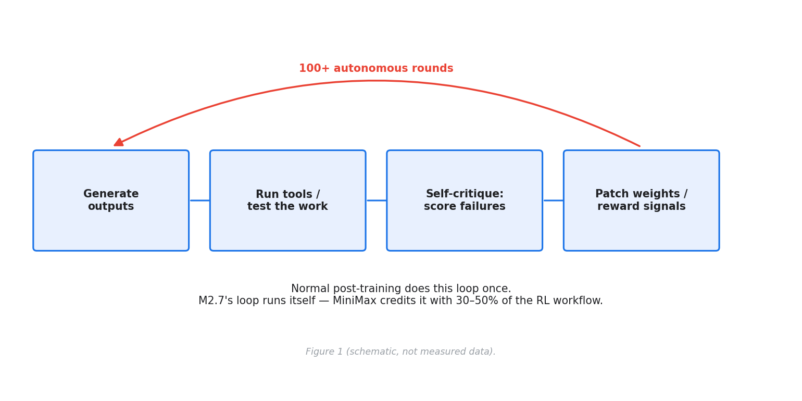
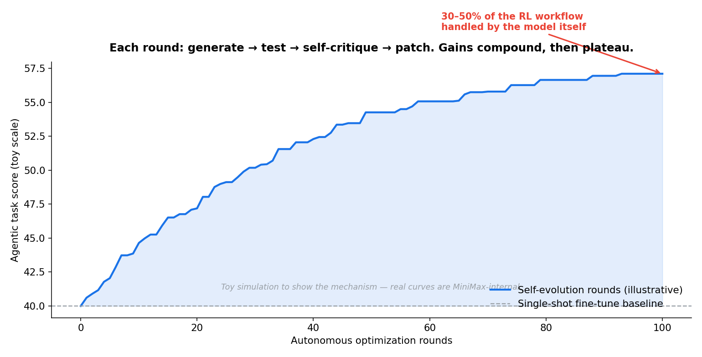
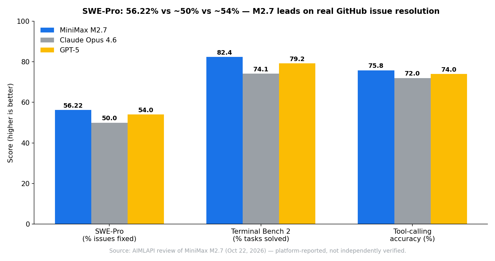
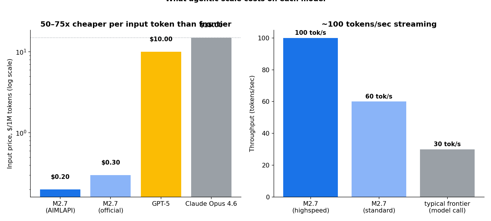

Most "agentic" models are trained the normal way — pretrain, fine-tune, RLHF — and then taught tool use as an afterthought, the way you'd hand a carpenter a power drill and hope for the best. MiniMax took the opposite route with M2.7: they let the model act as its own critic during training, running it through 100+ autonomous optimization rounds in an internal agent harness — generate outputs, test them, find the failures, patch the weak spots, repeat. MiniMax credits that loop with handling 30–50% of the reinforcement learning workflow in the model's development.
The result, announced in Shanghai in March 2026, is a proprietary text-only model that behaves like it was trained on agentic tasks from the ground up. And the numbers are genuinely uncomfortable for the frontier labs: 56.22% on SWE-Pro — autonomously closing more than half of real GitHub issues — at $0.30 per million input tokens, against Claude Opus 4.6's $15. That's a 50x input-price gap against a model that scores lower on the same benchmark.
The ELI5 version
Imagine two ways to train a junior engineer.
The normal way: you lecture her for a year (pretraining), then give her a handbook of best practices (fine-tuning), then a mentor reviews a few of her pull requests (RLHF). She can now write code. Whether she can debug a production incident at 3 AM — read logs, try a fix, run the tests, read the failure, try again — is a separate question. That's what "agentic" adaptation usually looks like: a model that can answer questions, wearing a tool belt it never really trained with.
M2.7's way: the mentor is replaced by a second version of herself. After every task she grades her own work, figures out where it broke, and — critically — feeds that failure back into her own training, not just into her memory. A hundred rounds of that, and "read the logs, fix, test, retry" stops being a skill she was taught and starts being how she thinks. That's the difference between an agentic model and a model adapted for agents.

How it works: the loop inside the loop
The harness (described in the October review as an internal agent system called OpenClaw) treats the model as both student and grader:
- Generate. The model attempts real tasks — debugging sessions, metric analyses, document rewrites — with full tool access.
- Evaluate. It runs the tools itself: reading logs, executing code, checking whether the fix actually passed.
- Critique. Failures get scored and localized. This is the key step: the model isn't just collecting preference pairs for a human-written reward model. It's improving the reward signals themselves — learning to distinguish "looks right" from "actually passed the tests."
- Patch. Weights and reward signals get updated against the failure, not just against a static dataset. Then the loop restarts with the improved model, so each round compounds: round 40's critic is smarter than round 1's.
The notebook's toy simulation of this loop shows the characteristic shape: fast early gains, then a long plateau. The first 10 rounds do most of the work; the last 10 add almost nothing. That's also the honest limit of recursive self-improvement — it compounds until the critic can't see further than the student, at which point the loop stalls. MiniMax's "30–50% of the RL workflow" claim is really a claim about how far that plateau extends before you need human-designed objectives again.

One design choice matters enormously: M2.7 is text-only. No vision encoder, no audio. That's a deliberate trade — 204,800 tokens of context plus automatic prompt caching (no manual cache config; the prefix is cached on first use and charged at a reduced rate after). In a 20-step agent loop with a 6K-token shared prefix, that auto-caching cuts input spend by roughly half — the October review claims 40–60% total cost reduction in production agentic workflows, and the notebook's dollar math lands at 54%. The 40–60% band only holds for long loops with big prefixes, though; a 5-step loop saves less. Caveats as always.
The numbers: what 50x buys you
The benchmark figures below come from an October 2026 review published by an API platform — platform-reported, not independently verified. Treat them as the vendor's story, not a neutral audit:

- SWE-Pro 56.22% vs ~50% (Opus 4.6) vs ~54% (GPT-5). This is the headline that matters: the benchmark scores real GitHub issue resolution — the model either closes the ticket or it doesn't. On 1,000 tickets, +6.22 points over Opus is 62 extra shipped fixes.
- Terminal Bench 2 82.4% vs 74.1% vs 79.2%. DevOps-style CLI work — log parsing, runbook steps, incident response — with near-zero tolerance for hallucinated flags. Note the honesty problem here: the launch announcement claimed 57.0% on Terminal Bench 2, not 82.4%. Different harness, different version, different measurement conditions — same lesson as always: demand the version stamp before you trust a benchmark number.
- Tool-calling accuracy 75.8% vs ~72% vs ~74%. Correct function invocation rate — the raw material every agent loop is built from.
- GDPval-AA 1,342 ELO on multi-round document editing with conflicting feedback (launch claimed 1,495 — again, different measurements, same warning).
And then the price chart:

At ~8K input + 2K output tokens per agentic issue attempt, a single attempt costs $0.0048 on M2.7's official pricing vs $0.27 on Opus 4.6 — and per resolved issue (attempt cost divided by success rate) it's $0.009 vs $0.54, a 60x gap. The notebook works all of this out. If you're spending $5,000/month on frontier tokens for coding agents, the platform review's claim that M2.7 cuts it to $100–300 is directionally right, even after you discount for marketing.
The honest caveat — where M2.7 loses
Three things the headline tweets skip. First, every number above is vendor- or platform-reported; the launch claims and the October review disagree on Terminal Bench (57.0% vs 82.4%) and GDPval-AA (1,495 vs 1,342 ELO), which tells you the measurement conditions aren't controlled. Second, it's proprietary — no open weights, API-only (OpenRouter lists it at $0.30/$1.20). Third, the successor is already here: MiniMax M3.1 Flash shipped October 19, 2026 with a 1M-token context and video input. M2.7 was the proof of concept for self-evolving training; M3.1 is where the architecture goes next.
And the model has real weaknesses: text-only (no multimodal input — chain it with MiniMax's Hailuo models for vision), creative long-form writing still belongs to Opus and GPT-5, a smaller third-party ecosystem, and verbose outputs you'll want to cap with max_tokens. Users on developer forums report it needs more babysitting than Claude in editors like Cline — the tool-use is strong, the judgment on when to ask for help is weaker. A model that can code but mishandles its tools is a carpenter who can measure but can't hold a saw.
Takeaways
- Self-evolving training is real and it works, with limits. 100+ rounds of generate → test → self-critique → patch produced a model that leads SWE-Pro at 1/50th the input price. The gains follow the classic diminishing-returns curve — recursive self-improvement compounds until the critic stops seeing further than the student.
- Agentic-native beats agentic-adapted. The stable tool handoffs across 10+ sequential steps are the actual product here, not the benchmark scores. Training the loop, not bolting it on.
- Price is a feature now. At $0.009 per resolved GitHub issue vs $0.54 on Opus, the frontier's moat is quality and judgment, not raw capability on structured tasks. That's a pricing war the cheap models are winning.
- Trust, but version-stamp. When the launch announcement and the October review disagree on the same benchmark by 25 points, the number isn't the story — the measurement is. Quote the version or don't quote it at all.
The companion notebook (selfevolve_minimax.ipynb) reproduces the mechanism toys: the recursive-improvement loop with its plateau, the 12-round self-critique residual-error collapse vs one-shot fine-tuning, the $0.009-vs-$0.54 per-resolved-issue cost math, and the auto-caching dollar check.